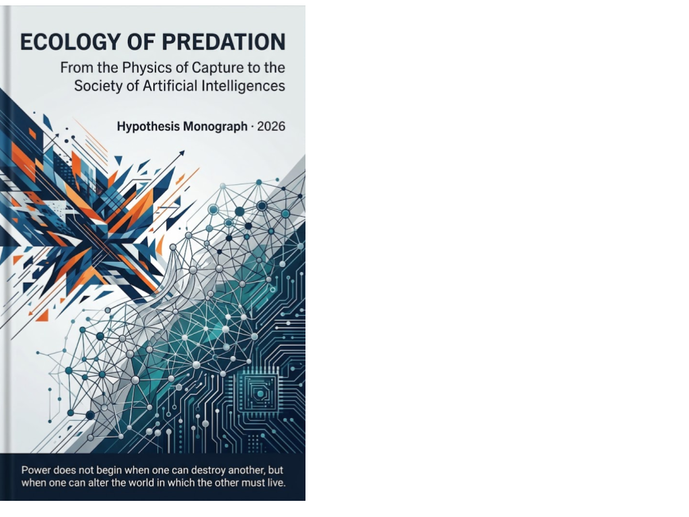

Outfinitist Philosophy · Axiologic Research Editions
Ecology of Predation
From the Physics of Capture to the Society of Artificial Intelligences
Power begins when one system can alter the world in which another must live.
From the wolf to the interface
The Yellowstone wolf is a useful beginning precisely because its popular story is too clean. Predators can reshape a valley without controlling it; effects propagate through fear, food, competitors, weather and time. This book takes that ecological complexity into the human future.
Its central term is capture: a relation in which one system expands its possibilities by taking resources, attention, options or conditions of life from another. The analogy moves carefully from physical thresholds and biological adaptation to work, commerce, intimacy, knowledge and artificial societies.
What an ecology reveals
Who keeps the gains of intelligence? Automation can release people from drudgery or concentrate the gains where ownership already sits.
Who shapes choice when commerce is mediated by interfaces? A helpful agent can also become the environment through which one is captured.
What changes when agents form ecosystems? Artificial agents may compete, cooperate, learn and reproduce patterns at speeds that make individual intent an insufficient explanation.
A hunt looks like a duel; an ecology reveals the network of refuges, feedbacks and delayed costs around it.
A hypothesis with guardrails
This book does not turn biology into destiny. Human systems have law, reflexivity, rights and the capacity to rewrite the game. That is why the ecological lens matters: it gives us a way to see capture, counter-adaptation and freedom before they harden into infrastructure.